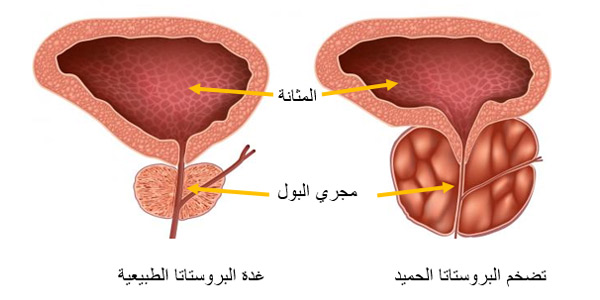
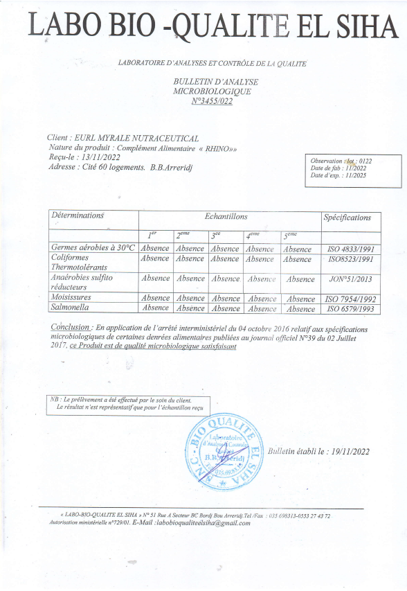

منتج واحد يخلصك من جميع مشاكل البروستات بلا رجعة

طريقة رائعة يمكن وصفها بأنها معجزة حقيقية للرجال سوف نخبركم عنها و عن كيفية الحصول عليها
إلى
الموضوع الذي لدينا اليوم ذكوري تمامًا - مشاكل البروستات. لكن ، مع ذلك ، أريد أن ترى جميع النساء إلى هذا المقال ، لا يذهب الرجال في كثير من الأحيان إلى الطبيب في بداية المشكلة ، بل يتحملون ، ويحاولون التخلص من مشاكل البروستات ببعض من الطرق الشعبية. ويمكن للمرأة أن تنير طريق الرجل وتوجهه إلى الطريق الصحيح.
لذلك موضوعنا اليوم عن مشاكل البروستات. كيف تحمي نفسك من هذه المشكلة ؟ هل هذا ممكن؟ كيف تتخلص من مشاكل البروستات ؟
ربما تكون بالفعل مصاباً بمشاكل البروستات. كلما زادت العوامل ، كلما تقدمت المشكلة بشكل متسارع. بالنسبة إلى بعض الأشخاص ، تظهر المشاكل هذه في سن 25 عامًا ، وبالنسبة للآخرين في سن 45 ، إنها مجرد مسألة وقت.
أعراض مشاكل البروستات ، قم بفحص نفسك بنفسك:
العديد من الرجال من مشاكل في البروستات. ليس من الصعب تحديد ما إذا كان الشخص مصابًا بمشاكل في البروستات أم لا
ربما تكون تعاني من احدى هذه المشاكل ؟
-
آلام حادة متكررة
- في أسفل البطن أو الخصيتين
- ألم في العضو الذكري أو منطقة الفخذ
-
مشاكل في التبول
- غالبًا ما ترغب في الذهاب إلى المرحاض ، تشعر بألم حاد في مجرى البول عند التبول
- الشعور بأن التبول "لم يتم حتى النهاية " ،
- مشاكل التبول ( ضعيف جدا)
-
المشاكل المتعلقة بالجماع الجنسي
- انخفاض حاد في الرغبة الجنسية
- انتصاب سيء وقصير المدة
-
المشاكل المرتبطة بالقذف:
- القذف السريع
- ضعف القذف
- التعب البدني والمعنوي الدائم
على الرغم من تدهور الزضع البيئي في السنوات الأخيرة ، يعاني العديد من الرجال من مشاكل البروستات ولا يشتكون من عواقبه و لا يعرفون كيف يمكن أن يؤثر على حياتهم المستقبلية
التهاب البروستات العادي

تضخم البروستات الحميد
إذا لم تتخلص من مشاكل البروستات ، فإنه يتطور بسرعة كبيرة ويؤدي غالبا إلى ورم غدي في البروستات
تقريبا يمكننا أن نفهم الرجال المصابين بمشاكل البروستات ، لا سيما بالنظر إلى مستوى توتر معظم الحالات ، بعد تشخيصهم بمشاكل البروستات ،و للأسف الكقير منهم يستخدم منتجات ليس لها أي فائدة في التخلص من مشاكل البروستات و هذا شيء سيء لانه يؤثر عليك بالسلب و ليس بالإيجاب

كيفية التخلص من مشاكل البروستات ؟
إن عدم توفر طرق فعالة للتخلص من مشاكل البروستاتا فهو موضوع خطير لان هذه المشاكل جدية للغاية و منتشرة بشكل كبير . و تقنيات مثل تدليك البروستات والإجراءات الأخرى تعطي تحسنًا مؤقتًا فقط، و يوجد الكثير من الطرق التي ليس لها فائدة .
الإجراء الأمثل للتخلص من مشاكل البروستات
جسم الرجل بعد سن 25 عامًا، ينخفض مستوى هرمونات الذكورة. يبدأ الجسم في استهلاك كميات أقل من الفيتامينات والمعادن. يؤدي إلى اضطرابات التمثيل الغذائي وضعف وتضيق أوعية العضو الذكري . بالإضافة إلى تغييرات أخرى:
- انخفاض في الإنتاج والتعب المزمن
- تغير مزاجي مفاجئ، نوبات غضب واكتئاب
- زيادة الوزن وفقدان الكتلة العضلية والقدرة على التحمل
- اضطرابات المسالك البولية
- تساقط شعر الرأس
- ضعف الذاكرة والانتباه والتنسيق والكلام والتفكير
لنفترض أنه إذا كنت مصابًا بالتهاب البروستات ، فسيتعين عليك إعطاء إنفاق الكثير من المال حتى تتخلص من هذه المشكلة ! في الواقع ، في بداية أغلب المنتجات تعطي مفعولاً و بكن بعد ذلك تكون بلا مفعول و ذلك لأنها منتجات غبر مفيدة في أي شيء . . وعندما تتوقف "عن إستخدام هذه المنتجات " ، فيعود لك كل الأعراض مرة اخرى و يمكن ان تكون الأعراض أشد من قبل .

بكل ثقة نقول لكم انه يوجد منتج موثوق و مصدق عليه يسمى RHINO و هو مكمل غذائي طبيعي 100% يتكون من مكونات طبيعية و ليس لها أي أثار جانبية عن الإستخدام للرجال فوق سن 18 عاماً .
ما هي مكونات RHINO ؟
- الجينسينج الاحمر
- نبات القراص
- الماكا
- الزنجبيل
- تونكة علي

يحتوي الجينسينج الاحمر على مركبات مضادة للالتهابات مثل الصابونين تقضى على مشاكل البروستات ويحتوي على مضادات للميكروبات والفيروسات ويحتوي مضادات للأكسدة تنشط المناعة مما يقضي أيضاً على مشاكل مشاكل ضعف الإنتصاب لدى الرجال و الضعف

يحتوي نبات القراص على مركبات مفيدة مثل الجنسنوسيدات والبوليساكاريدات والسابونين، والتي تعزز الجهاز المناعي وتحسن القوة الجنسية.

تساعد على التخلص من الضعف الجنسي و يمكن أن تساعد جذور الماكا على التخلص من ضعف الانتصاب

يوجد في الزنجبيل فيتامين أ وفيتامين ج وفيتامين هـ وبيتا كاروتين والزنك، وجميع مضادات الأكسدة القوية التي تدافع عن البروستاتا من الجذور الحرة الضارة التي تُسرع تطور التضخم

تناول تونكات علي بانتظام إلى تحفيز الإثارة الجنسية، وتحسين ضعف الانتصاب لدى الرجال، كما اتضح أنه يحسن حركة الحيوانات المنوية وتركيزها، مما يزيد من خصوبة الذكور
أراء الخبراء

عندما تم سؤال الطبيب الروسي الشهير دينيس بوتوف عن هذا المنتج قال :
" تحتوي كل حبة من RHINO على مزيج مثالي من الجينسينج الاحمر و الماكا و الزنجبيل و طونقة علي و نبات القراص والفيتامينات. كانت هذه المكونات العشبية هي المكون الرئيسي للعديد من الطرق القديمة للصينيين على مدار أعوام . ما يجعل RHINO فريدًا من نوعه هو المكمل الغذائي الحاصل على رضا كل من إستخدمه . في الوقت الحالي هذا هو أفضل منتج أنصح به الجميع و دائماً أنصح به مرضاي و أصدقائي و لانه ببساطة منتج طبيعي 100% و أنا شخصياً إستخدمته . "
ما هي مميزات المكمل الغذائي RHINO ؟
|
Prostan |
|
|---|---|
| مميزات عمل RHINO | علاج كامل من التهاب البروستات ، حتى المزمن ، مرة واحدة وإلى الأبد. أخد دورة واحدة فقط. |
| تأثيرات إضافية: | 1- زيادة القوة الجنسية |
| أعراض جانبية | 2- التخلص من الضعف الجنسي |
| كيف يعمل: | 3- تحسين كفائة الحيوانات المنوية |
| المكونات: | 4- تحسين جودة السائل المنوي |
| الضمانات: | 5- القضاء على مشاكل البروستات |
| الضمانات: | 6- تطبيع عملية التبول. |
| نموذج المنتج: : | حبوب |
| الآثار الجانبية | لا يوجد ، لأنه مكون من مكونات طبيعية. |
| مبدأ العمل: | يعمل على التخلص من مشاكل البروستات نهائياً و يساعد على تكبير القضيب وزيادة النشاط الجنسي. ويتألف من مكونات طبيعية 100٪ ومناسب للرجال من جميع الأعمار فوق 18 عاماً . إذ يُعزز القوة الجنسية وتدفق الدم في منطقة أسفل الحوض، كما يُحفز إنتاج هرمون الذكورة الرئيسي المعروف باسم التستوستيرون. وبفضل هذا المكمل الغذائي يصبح القضيب أطول وأكثر سمكاً من ذي قبل، كما يُصبح الانتصاب قويا ويستمر لفترة طويلة. |
| إعتماد المنتج و تصديقه |  |
كيف يمكن الحصول على RHINO في الجزائر ؟
هذا المنتج متوفر للبيع عبر الانترنت ولم نعثر على بدائل. لذلك،يمكنكم طلبه عبر النمذوج الرسمي للطلب بالأسفل . و بالفعل الطلب كثير جداً على هذا المنتج. لذلك، ننصحكم بشراء هذا المنتج فقط عن طريق ملئ النموذج الرسمي للطلب RHINO حيث ستكون متأكدًا تمامًا من جودة وأصالة المنتج.
سوف نضع لكم النموذج الرسمي لطلب المنتج في الجزائر بالأسفل
الأن يوجد تخفيض بنسبة 50% و أخر يوم للعمل بالتخفيض هو يوم
النموذج الرسمي للطلب
السعر قبل التخفيض 11998 DZD
السعر بعد التخفيض 5999 DZD
عند شرائك دورة RHINO
أدخل إسمك
أدخل رقم هاتفك
يُنصح به لكل الرجال
تعليقات
وليد
شريتو هاد مكمل ،بزاف هايل ،ننصحكم به👍
فتحي
هدا مكمل ساعدني بزاف في حياتي زوجية
منصور
هذا مكمل عاوني نتخلص من بروستات ،كنت نسوووفري مي دوك الحمد لله،تهنت من هذا مشكل
إيهاب
سييت شحال من منتوج مي عاوني غير Rhino
سامي
تهنييت من مشكل بروستات كنت نعاني دوك حمدالله ننصحكم بيه متندموش عليه منتوج طبيعي 100%
كريم
لقد أخبرني صديقي عن هذا المنتج في البداية لم اصدقه و لكن بعد إستخدامي لهذا المكمل الغذائي الرائع عرفت انني كنت مخطئ و الأن انا أنصح به الجميع
إسماعيل
راني فرحان بزاف كي عودت وليت بقوتي بالفضل Rhino، تهنيت من مشاكل بروستات 🔋💪
لمعي
ننصحكم بيه هاد منتج معجزة ،عندي 3 شهور راني نشرب فيه ،بارح درت تحاليل لقيت بروستات نقصلي ،شكرا لي هدا منتوج و ربي سبحانو 👍
نديم
اشتريته. بفضل الشركات المصنعة!
نزار
عندي شهاز ملي شريتو ،قوووووة ،فووور هدا منتج ،مستنيش نتائج كما هك👍💪
لطيف
انا كمنديتو بارح مزال ملحقنيش،انشاء لله اليوم الحقولي امانتي .
محمود
قرأت عنه كثيراً في الإنترنت و طلبته الأن بالفعل بعد معرفتي ان الدفع عند الإستلام
كامل
ياله من منتج معجزة بالفعل ! سوف أطلبه الأن بكل تأكيد
إبراهيم
شكرا لكم جمبعاً لقد حصلت عليه بالتخفيض 50% ! !